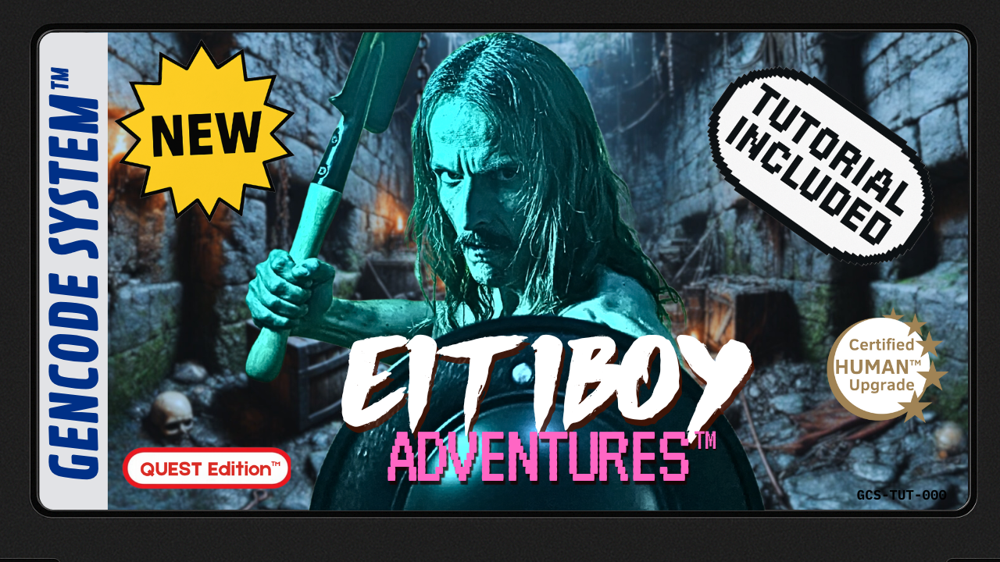
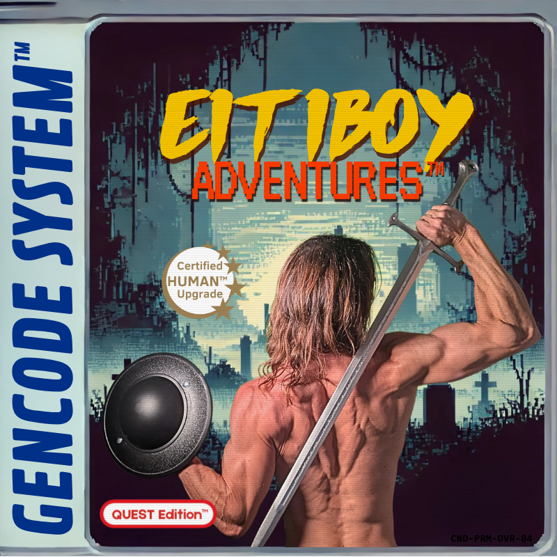
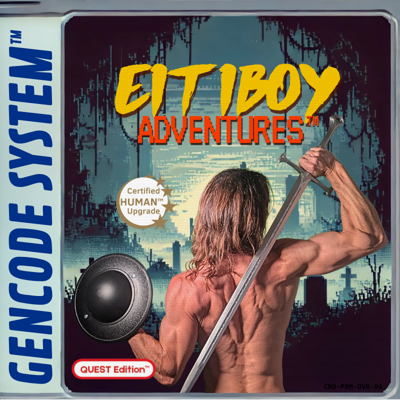

Secuencia de arranque del sistema
Este proyecto explora la naturaleza humana: pasado, presente y futuro. No desde el postureo ni la nostalgia vacía, sino buscando lo que nos hizo fuertes, creativos y adaptables... y cómo podemos recuperarlo hoy.
Algunos vídeos son más filosóficos y reflexivos; otros te dan herramientas prácticas para mejorar tu salud física y mental. Las listas FORGE-N Edition™ y GENCODE System™ están pensadas para ayudarte a reconectar con tu biología, tus hábitos y tu evolución. Si alguna misión aparece, no es por estética: es porque vale la pena jugarla.
> insertando cartucho . . .
 



GENCODE System™
El GENCODE System™ es la parte jugable del canal. Aquí conviertes el cuerpo en hardware entrenado y tu vida en una partida. Porque TODO es un juego —pero no uno vacío: los humanos aprendemos, crecemos y nos transformamos jugando.
Como decía Huizinga en *Homo Ludens*, el juego no es solo ocio: es cultura, es evolución. Cada hábito que eliges, cada misión que completas, es una mecánica para subir de nivel real, no simbólico.
No hace falta saber biología. Lo explico fácil. Tú eliges si entras al sistema o te quedas como un procesado más de la civilización.
FORGE-N Edition™
Esta parte es el laboratorio. Aquí desarrollo ideas con más calma: cultura ancestral, neurociencia, evolución, historia, hormesis... Todo lo que te da contexto para entender mejor por qué estas misiones tienen sentido.
Es como leer el manual oculto del cartucho. Si te mola ir más allá, aquí es donde se forja el conocimiento.
GENCODE Log
Archivo de Activación del sistema GENCODE™. Aquí se registran las misiones lanzadas, sus efectos biológicos y los genes implicados. Este es tu historial de transformación.
Misión 001: Explora tu mazmorra
Instrucciones: Desconéctate 15 minutos al día durante 7 días. Sin pantallas. Sin música. Solo tú y tu mente.
Objetivo: Activar introspección, reducir sobreestimulación, entrenar foco.
Genes implicados: BDNF, NR3C1, SIRT1
Estado: 🟢 Disponible
Misión Q-002: LA FORJA DEL FRÍO
Atributo base: 🌡 ADAPTACIÓN
Módulo desbloqueado: Resistencia al frío
Objetivo: Activar rutas genéticas reales mediante duchas frías progresivas durante 7 fases.
Protocolo: Día 1: 10s · Día 2: 20s · ... · Día 7: 70s. No necesitas hacerlo en días consecutivos. Solo avanzas si completas la fase anterior.
Genes implicados:
- UCP1 – Termogénesis sin temblores, activación de grasa parda, aumento del gasto calórico basal.
- PGC-1α – Biogénesis mitocondrial, mayor energía celular, resistencia al esfuerzo.
- NRF2 – Defensa antioxidante, protección celular, longevidad activa.
Estado: 🟢 Disponible
Misión Q-003: EL AYUNO DEL GUERRERO
Atributo base: ♻️ REPARACIÓN
Módulo desbloqueado: Reparación celular profunda
Objetivo: Activar mecanismos de limpieza interna y longevidad mediante un ayuno de 16 horas.
Protocolo: Realiza un ayuno de 16h al menos una vez esta semana. Agua, café o infusión sin azúcar están permitidos. Bonus: combínalo con una caminata suave.
Genes implicados:
- AMPK – Sensor energético. Moviliza grasas, detiene almacenamiento, mejora metabolismo.
- PGC-1α – Estimula nuevas mitocondrias. Aumenta energía y resistencia física y mental.
- SIRT1 – Repara ADN, combate oxidación y envejecimiento.
- FOXO3 – Activa autofagia, reciclaje celular y longevidad funcional.
Estado: 🟢 Disponible
Sobre mí
Si te mola el rollo retro, los cartuchos, los códigos ocultos y las vibes ochenteras/noventeras, este proyecto te va a flipar. Aquí todo está gamificado: cada vídeo es una misión, cada hábito que integras activa algo real en tu biología.
Soy Máster en Cognición y Evolución Humana, y he mezclado la cultura friki que nos forjó (Conan el Bárbaro, Berserk, MGS, FFVII, DnD...) con el rigor académico de mi profesión. Esto no es solo entretenimiento, es un sistema para entendernos mejor y mejorar sin caer en el ruido de siempre.
Y si resuena contigo, aprieta Start para empezar la partida.
STARTContacto
¿Quieres comentarme algo, compartir tu experiencia o preguntar algo sobre el sistema? Déjalo directamente en los comentarios de YouTube, ahí es donde estoy activo.
📡 Canal: Eitiboy Adventures™ en YouTube